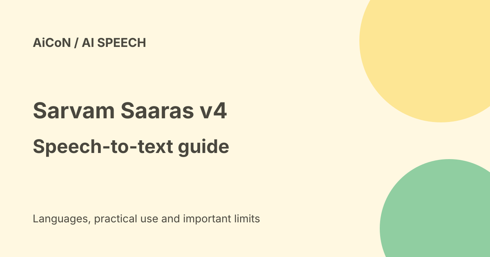

Sarvam Saaras V4: speech to text for Indian languages
Saaras is Sarvam's speech-to-text model family for Indian languages, available through a paid developer API. Version 4 is the latest model. It is for people building apps, not a ready-made app for general use.

What is Saaras?
Sarvam is an Indian AI company. Its docs describe Saaras as a speech recognition family that supports 23 languages: 22 Indian languages plus English. The speech-to-text page lists Malayalam (ml-IN) among them. It can detect the language automatically and handles code-mixed speech, where people switch between languages.
Five output modes
- Transcribe: standard transcription.
- Translate: speech converted to English text.
- Verbatim: exactly what was said.
- Translit: the transcript written in another script.
- Codemix: mixed-language output.
Saaras v3 or v4?
The docs say Saaras v4 is the latest model and adds Global English support, as well as Indian English, with the same 22 Indian languages. They also say Saaras v3 remains the default and recommended model. Both have the same request shape, so developers can change the model name to compare them.
Price in rupees
| Speech to text | Rs 30 per hour of audio, billed per second. |
|---|---|
| With speaker identification | Rs 45 per hour. |
| With translation | Rs 30 per hour, per the pricing page. |
| Free credits | Sarvam confirms free signup credits, but the checked page gives no amount. Check your dashboard. Paid top-ups are non-refundable; unused credits currently do not expire. |
Prices are in Indian rupees on Sarvam's own pricing page, so no conversion is needed.
How a developer can try it, step by step
- Create an account on the Sarvam dashboard and get an API key.
- Read the Saaras page in the docs and choose REST for short clips, batch for recordings or streaming for live audio.
- Send a short audio file with model set to saaras:v3 and then saaras:v4.
- Try the same file in transcribe and codemix modes and compare the text.
- Check accuracy on your own audio, such as a phone call in Malayalam with English words, before you plan a project.
- Estimate monthly cost from your hours of audio at Rs 30 per hour.
What changed since the short post?
The current docs list v4 as latest but still recommend v3 by default. Official pricing confirms free signup credits, without an amount on the checked page. Benchmark claims are vendor claims.
Frequently asked questions
Is there a free app?
No. This is a developer API with pay-as-you-go pricing.
Does it support Malayalam?
Yes, the speech-to-text page lists Malayalam.
Which version should I use?
Docs recommend v3 as default. Try v4 if you need Global English.
Sources: Sarvam Saaras documentation, Sarvam API pricing, Sarvam speech to text. Checked 6 October 2026.